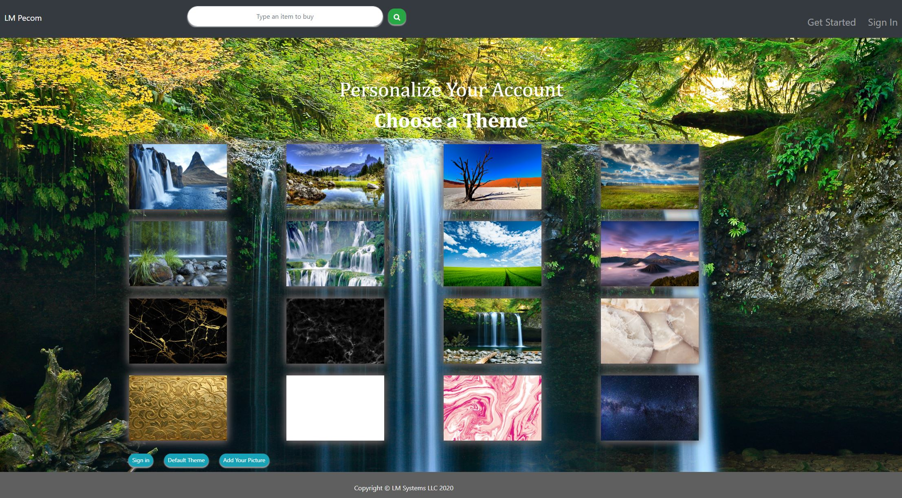

PeCom is a personalized e-commerce storefront that functions like Amazon storefront, but one step different (users personalized page). It uses MongoDB for storing, retrieving and updating orders. The app will take in orders from customers by searching for the item they want to order using Walmart APIs. They can save these orders for later purchase, delete, or proceed to purchase. If a book is detected in their orders, the apps will ask if they want to join a Book Exchange Program, if yes, their account will be automatically enroll into the program (This is optional for us in implementing). A separate page will be available to see other user’s books and they can request for an exchange (No buying and selling of books, only an exchange). The request will show in the other user book list as “BOOK REQUESTED” the user can decline the request or grant the request. PeCom is more of a data driving app in terms of personalizing the layout or the look of individual users page that shop on the website. Each user that has an account will have different page layout base on how they customize their page. This will be reflected in every page layout.
Github Repository Link | | https://github.com/LMTrain/pecom
Deployed Link | | https://lm-pecom.herokuapp.com
